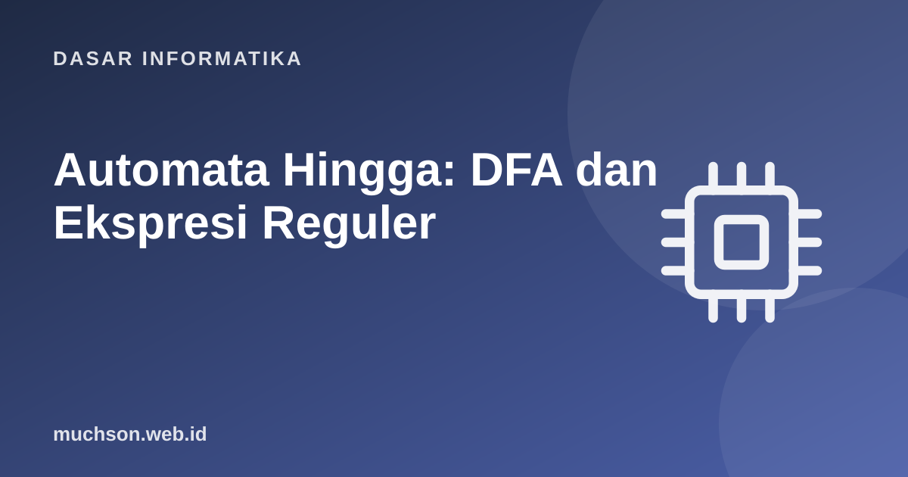

Beranda › Artikel › Dasar Informatika
Dasar InformatikaAutomata Hingga: DFA dan Ekspresi Reguler
Mesin keadaan berhingga adalah model komputasi paling sederhana: sejumlah keadaan dan aturan perpindahan. Namun ia muncul di mana-mana: pencocokan teks, protokol jaringan, lampu lalu lintas, kontrol gim, dan tentu saja ekspresi reguler. Memahaminya menunjukkan apa yang dapat dan tidak dapat dilakukan regex.
Sebaiknya sudah paham: himpunan, ekspresi reguler dasar

Setelah membaca dan mencoba materi ini, Anda mampu:
- mendefinisikan DFA: keadaan, alfabet, transisi, keadaan awal dan akhir
- menggambar dan mensimulasikan DFA untuk suatu bahasa
- menghubungkan DFA dengan ekspresi reguler
- merancang DFA untuk pola praktis (angka, surel sederhana, protokol)
- menjelaskan batas DFA: bahasa non-reguler seperti kurung seimbang
Contoh pertama: lampu lalu lintas
Definisi DFA
DFA (Deterministic Finite Automaton) terdiri dari: himpunan keadaan Q, alfabet Σ, fungsi transisi δ: Q × Σ → Q (tepat satu keadaan berikutnya untuk setiap simbol), keadaan awal q₀, dan himpunan keadaan akhir (penerima) F. Sebuah string diterima bila setelah membaca seluruh string, mesin berada di keadaan akhir.
DFA untuk: string biner dengan jumlah 1 yang genap
class DFA:
def __init__(self, transisi, awal, akhir):
self.t, self.awal, self.akhir = transisi, awal, set(akhir)
def terima(self, teks):
keadaan = self.awal
jejak = [keadaan]
for simbol in teks:
if (keadaan, simbol) not in self.t: # tidak ada transisi: ditolak
return False, jejak
keadaan = self.t[(keadaan, simbol)]
jejak.append(keadaan)
return keadaan in self.akhir, jejak
# jumlah '1' genap
genap1 = DFA({("genap", "0"): "genap", ("genap", "1"): "ganjil",
("ganjil", "0"): "ganjil", ("ganjil", "1"): "genap"}, "genap", {"genap"})
for s in ["", "0", "1", "11", "1011", "10101", "0000"]:
diterima, jejak = genap1.terima(s)
print(f"{s!r:>8} -> {'DITERIMA' if diterima else 'ditolak ':<8} {' > '.join(jejak)}") '' -> DITERIMA genap
'0' -> DITERIMA genap > genap
'1' -> ditolak genap > ganjil
'11' -> DITERIMA genap > ganjil > genap
'1011' -> ditolak genap > ganjil > ganjil > genap > ganjil
'10101' -> ditolak genap > ganjil > ganjil > genap > genap > ganjil
'0000' -> DITERIMA genap > genap > genap > genap > genap
DFA untuk: bilangan bulat berformat "tanda opsional lalu satu atau lebih digit"
class DFA:
def __init__(self, transisi, awal, akhir): self.t, self.awal, self.akhir = transisi, awal, set(akhir)
def terima(self, teks):
k = self.awal
for s in teks:
k = self.t.get((k, s))
if k is None: return False
return k in self.akhir
# keadaan: S (awal), T (sudah tanda), D (sudah ada digit; akhir)
t = {}
for d in "0123456789":
t[("S", d)] = "D"; t[("T", d)] = "D"; t[("D", d)] = "D"
t[("S", "+")] = "T"; t[("S", "-")] = "T"
bulat = DFA(t, "S", {"D"})
for s in ["42", "-7", "+0", "", "-", "4-2", "12a", "007"]:
print(f"{s!r:>6} -> {bulat.terima(s)}")
# setara dengan ekspresi reguler [+-]?[0-9]+
import re
polanya = re.compile(r"[+-]?[0-9]+")
print("DFA dan regex sepakat:", all(bulat.terima(s) == bool(polanya.fullmatch(s)) for s in ["42", "-7", "+0", "", "-", "4-2", "12a", "007"])) '42' -> True
'-7' -> True
'+0' -> True
'' -> False
'-' -> False
'4-2' -> False
'12a' -> False
'007' -> True
DFA dan regex sepakat: True
Ekspresi reguler: tiga operasi dasar
| Operasi | Notasi | Makna |
|---|---|---|
| Penyambungan | ab | a diikuti b |
| Pilihan | a|b | a atau b |
| Bintang Kleene | a* | nol atau lebih a |
Fitur lain (+, ?, [a-z], \d) hanyalah singkatan dari ketiga operasi itu. Mesin regex mengubah pola menjadi automata (NFA lalu DFA) untuk mencocokkan teks.
Batas DFA: yang tidak dapat dilakukan
DFA hanya memiliki memori terbatas (keadaan saat ini). Ia tidak dapat menghitung tanpa batas. Akibatnya, bahasa seperti kurung seimbang (((...))) atau aⁿbⁿ (n kali a lalu n kali b) bukan reguler: perlu mengingat berapa kurung terbuka, bilangan yang tak terbatas.
import re
# regex tidak dapat mencocokkan kurung bersarang dengan kedalaman sembarang
pola = re.compile(r"^(\(\))*$") # hanya "()()()", tidak memahami "(())"
for s in ["()", "()()", "(())", "((()))"]:
print(f"{s:<8} regex: {bool(pola.match(s))} seimbang sebenarnya: {s.count('(') == s.count(')')}")
# pemecahan: tambahkan memori berupa pencacah atau tumpukan (automata pushdown)
def seimbang(s):
kedalaman = 0
for ch in s:
kedalaman += 1 if ch == "(" else -1
if kedalaman < 0: return False
return kedalaman == 0
print([seimbang(s) for s in ["(())", "(()", "())("]])() regex: True seimbang sebenarnya: True
()() regex: True seimbang sebenarnya: True
(()) regex: False seimbang sebenarnya: True
((())) regex: False seimbang sebenarnya: True
[True, False, False]
Peringatan praktis: banyak mesin regex modern (Python re, JavaScript, PCRE) memakai backtracking dan fitur di luar bahasa reguler (referensi balik). Pola buruk seperti (a+)+$ dapat berjalan sangat lambat pada masukan tertentu (ReDoS), kerentanan nyata. Untuk masukan tak tepercaya, batasi panjang dan hindari pola bersarang yang ambigu.
1. Rancang DFA untuk string biner yang berakhiran "01".
2. Tulis regex untuk kode pos 5 digit dan jelaskan DFA-nya.
3. Mengapa DFA untuk "banyak a sama dengan banyak b" tidak mungkin?
4. Apa perbedaan DFA dan NFA?
- DFA: keadaan, alfabet, transisi, awal, akhir; menerima bila berakhir di keadaan akhir.
- DFA dan ekspresi reguler setara: bahasa reguler.
- Regex praktis = penyambungan, pilihan, bintang, dengan singkatan.
- Memori terbatas membuat DFA tak mampu mengenali kurung seimbang; butuh tumpukan.
- Waspadai ReDoS pada regex backtracking.
Tanya jawab
Di mana mesin keadaan dipakai selain teks?
Apa itu mesin Turing?
Bagaimana membangun lexer dengan DFA?
Referensi
- Michael Sipser, Introduction to the Theory of Computation (Cengage)
- Russ Cox, Regular Expression Matching Can Be Simple And Fast
- Aho, Lam, Sethi, Ullman, Compilers: Principles, Techniques, and Tools (Pearson)
- Dokumentasi Python: re